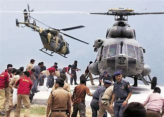

The Indian Army's helicopter fleet is a crucial component of its operational capabilities, featuring a mix of attack, utility, and reconnaissance platforms. Key attack helicopters include the indigenously developed HAL Rudra and HAL Prachand, as well as the advanced Boeing AH-64E Apache. For utility roles, the army operates the HAL Dhruv, along with older but still vital helicopters like the HAL Chetak and Cheetah, and is inducting the new HAL Light Utility Helicopter (LUH). The HAL Rudra and Cheetah also serve in reconnaissance roles. These helicopters provide essential support for troop transport, logistics, close air support, anti-tank warfare, search and rescue, and reconnaissance across diverse terrains, including high-altitude regions. The Army Aviation Corps continues to modernize its fleet to maintain its aerial superiority and support ground operations effectively.
The HAL Rudra, also known as ALH-WSI (Weapon System Integrated), is the armed version of the HAL Dhruv utility helicopter, designed and developed by Hindustan Aeronautics Limited (HAL) for the Indian Army. Conceived after the Kargil War to provide a quicker indigenous armed helicopter solution than the Light Combat Helicopter (LCH) program, the Rudra made its first flight in 2007 and was inducted into service in 2013. It features integrated sensors including FLIR, day-and-night optical cameras, and a Thermal Imaging Sights Interface. Armed variants are equipped with a 20 mm turret gun, 70 mm rocket pods, anti-tank guided missiles like the HELINA, and air-to-air missiles such as the Mistral. The HAL Rudra serves in roles including anti-tank warfare, close air support, armed reconnaissance, and high-altitude operations, enhancing the Indian Army's firepower and versatility.

The HAL Prachand, meaning "fierce," is India's first indigenously designed and manufactured Light Combat Helicopter (LCH) by Hindustan Aeronautics Limited (HAL). Developed primarily in response to the need for a high-altitude warfare capable attack helicopter following the 1999 Kargil War, the Prachand officially entered service with the Indian Air Force in October 2022. This 5.8-tonne class helicopter stands out for its exceptional capability to operate at high altitudes, up to 6,500 meters (21,300 feet), making it uniquely suited for regions like the Siachen Glacier and eastern Ladakh. Powered by two HAL/Turbomeca Shakti engines, it boasts a combat radius of 500 km and is armed with a 20mm turret gun, 70mm rockets, air-to-air Mistral missiles, and the indigenous Dhruvastra anti-tank guided missiles. With advanced features including a glass cockpit, integrated avionics, helmet-mounted sighting system, and electronic warfare suite, the HAL Prachand provides a significant boost to India's combat aviation capabilities, especially in challenging high-altitude environments.
The Boeing AH-64E Apache is a highly advanced, twin-turboshaft attack helicopter that the Indian Army is in the process of inducting to significantly bolster its combat aviation capabilities. As the latest and most capable variant of the Apache, the AH-64E for the Indian Army features enhanced digital connectivity, more powerful engines, and the ability to control unmanned aerial vehicles. It is armed with AGM-114 Hellfire anti-tank missiles, air-to-air Stinger missiles, 70 mm Hydra rockets, and a 30 mm chain gun, making it a formidable force against a wide range of ground and aerial threats. While the Indian Air Force already operates a fleet of AH-64E Apaches, the Army's acquisition of six of these "tank killers" aims to enhance close air support, especially in challenging terrains. Although deliveries have faced delays due to global supply chain issues, the eventual induction of the AH-64E will provide the Indian Army with a versatile, lethal, and survivable platform, strengthening its overall defense posture and operational readiness. Notably, Tata Boeing Aerospace Limited in Hyderabad is also involved in manufacturing fuselages for these helicopters, aligning with India's "Make in India" initiative.
The HAL Dhruv, meaning "unshakeable" in Sanskrit, is an indigenously designed and developed multi-role, twin-engine utility helicopter by Hindustan Aeronautics Limited (HAL). Initiated in 1984 with design consultation from Germany's MBB, its first flight occurred in 1992, and it entered service in 2002 after extensive trials and certifications for both military and civil operations. The Dhruv is a versatile platform capable of performing various roles, including troop transport, utility, reconnaissance, casualty evacuation, and even light attack when equipped as the Weapon System Integrated (WSI) variant, also known as the HAL Rudra. It features a modern glass cockpit, advanced avionics, and the ability to operate in diverse terrains, including high-altitude regions like the Siachen Glacier. The helicopter has been produced in several variants, including the Mk-I, Mk-II with an integrated architecture display system, the more powerful Shakti engine-equipped Mk-III, and the armed Mk-IV (Rudra). With over 300 units produced and serving with the Indian Army, Air Force, Navy, Coast Guard, and even exported to other countries, the HAL Dhruv is a significant asset and a testament to India's growing aerospace capabilities. Notably, following a crash incident in early 2025, the Dhruv fleet was temporarily grounded, but the Army and Air Force variants have since been cleared for resumed operations based on the recommendations of the Defect Investigation Committee.
The HAL Chetak is a versatile, multi-role, single-engine helicopter of French origin, license-produced in India by Hindustan Aeronautics Limited (HAL) since the 1960s. Based on the Aérospatiale Alouette III, the Chetak is a two-tonne class, seven-seater helicopter known for its reliability and adaptability across various roles including troop transport, cargo movement, casualty evacuation, search and rescue, and training. Powered by a Turbomeca Artouste IIIB engine, it has a cruise speed of around 185 km/h and a range of 500 km, with the ability to operate at high altitudes. Having served the Indian armed forces for over six decades, the Chetak has become a workhorse for communication duties, patrolling, and even anti-submarine warfare when equipped. Although its technology is now dated, the Chetak remains a significant part of India's aviation history and continues to serve, while efforts are underway to replace it with newer indigenous platforms like the HAL Light Utility Helicopter (LUH).
The HAL Cheetah is a high-performance, lightweight, single-engine helicopter, also of French origin and license-produced by Hindustan Aeronautics Limited (HAL) in India. Based on the Aérospatiale SA 315B Lama, the Cheetah is renowned for its exceptional capabilities in high-altitude operations, making it a crucial asset for the Indian Army, particularly in mountainous regions like the Siachen Glacier. Inducted into service in the 1970s, it's a five-seater helicopter primarily used for reconnaissance, observation, utility tasks, search and rescue, and casualty evacuation. While HAL also developed an armed version called the Lancer, the Cheetah itself is valued for its agility and ability to operate in demanding environments where other helicopters might struggle. Although an aging fleet, the Cheetah continues to be an important workhorse for the Indian armed forces due to its unique high-altitude performance, and efforts are underway to eventually replace it with the indigenous HAL Light Utility Helicopter (LUH).
The Indian Air Force (IAF) leverages its helicopter fleet across a spectrum of operations, each sometimes bearing a specific name depending on the context and scale. In combat scenarios, while specific named helicopter-only operations might be less common than those involving fixed-wing aircraft, helicopters are crucial in providing close air support and tactical lifts, as seen in the support provided during Operation Vijay (Kargil War, 1999) where they supported ground troops. More recently, during Operation Sindoor (May 2025), helicopters likely played a role in reconnaissance and potentially troop transport, although the primary focus was on air-to-ground strikes by fighter jets.
In Humanitarian Assistance and Disaster Relief (HADR) efforts, IAF helicopters are often at the forefront. For instance, during the 2013 North India floods, the extensive rescue and relief efforts could be considered under the unnamed umbrella of "HADR Operations in Uttarakhand." Similarly, the IAF's rapid response during the 2018 Kerala floods was a significant HADR operation where helicopters played a vital role in rescuing stranded people and airdropping supplies. While these might not always have a specific operation name widely publicized, their impact is significant. Operations like Operation Maitri (Nepal earthquake, 2015) and Operation Kaveri (Sudan evacuation, 2023) also heavily involved helicopters for evacuation and logistical support.
